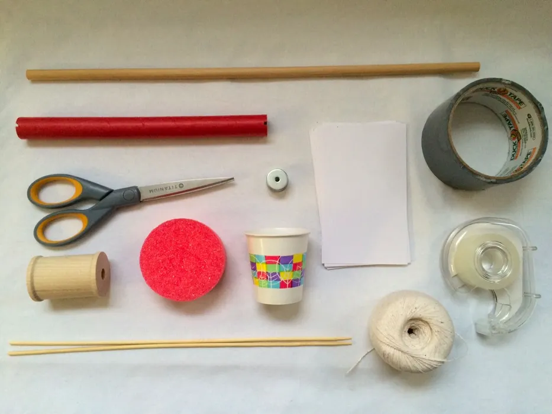
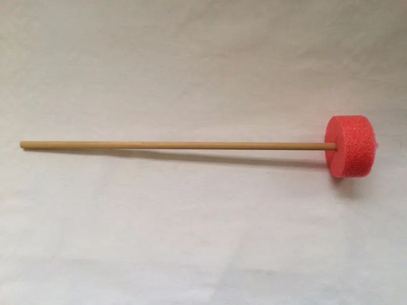
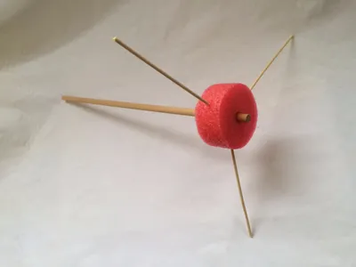
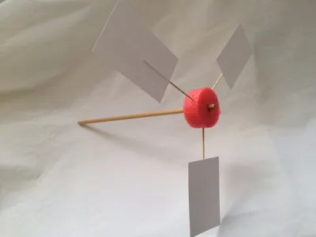
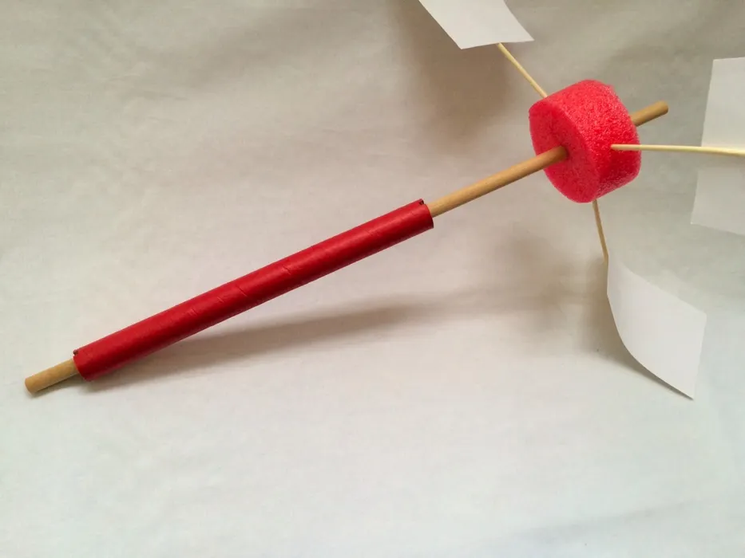
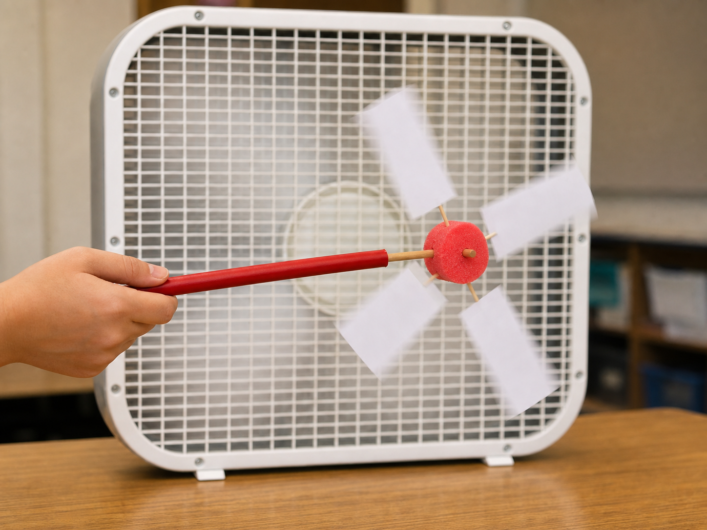
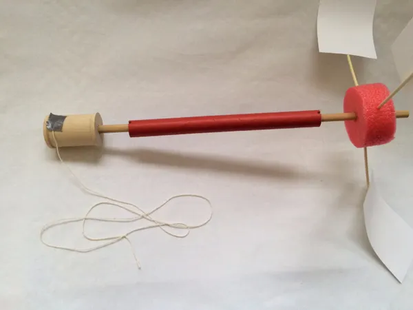
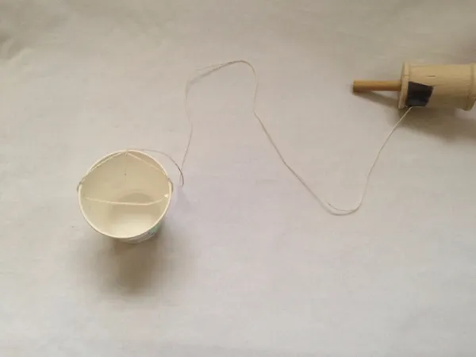
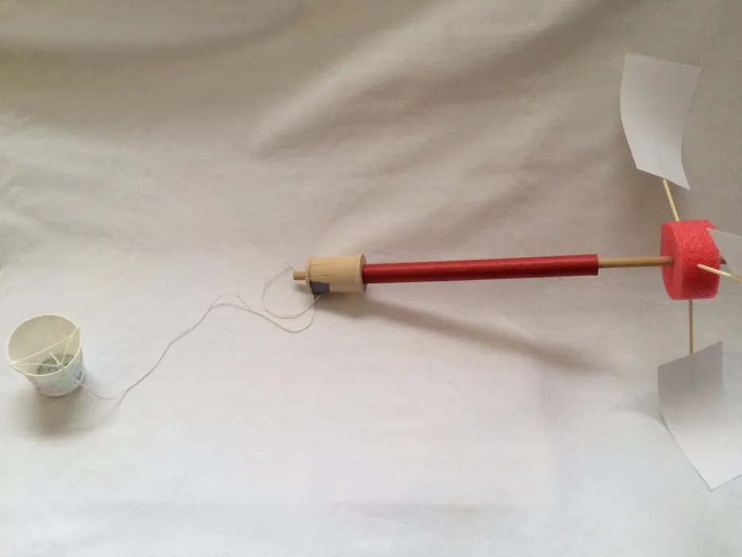

01
Gather the materials
Collect a foam or pool-noodle hub, skewers, index cards, a dowel, a cardboard tube, string, a spool, a cup, tape, and washers.

Build a windmill that spins in front of a fan, turns a dowel, and lifts a cup of small weights.

Before You Start
Build It
Collect a foam or pool-noodle hub, skewers, index cards, a dowel, a cardboard tube, string, a spool, a cup, tape, and washers.

Attach index-card blades to skewers, then push the skewers into the foam hub. Tape or glue the hub to the dowel so they spin together.



Slide the cardboard tube over the dowel. The tube becomes the handle, while the dowel inside it acts as an axle that can spin freely.

Hold the cardboard tube in front of a box fan. If the blades do not spin well, change the blade number, angle, shape, or material.

Attach a spool to the dowel, tie string to the spool, poke holes in the cup, and tie the cup to the string so it can be lifted.


Put washers in the cup and hold the drivetrain in front of the fan. The spinning dowel should wind the string around the spool and raise the cup.
